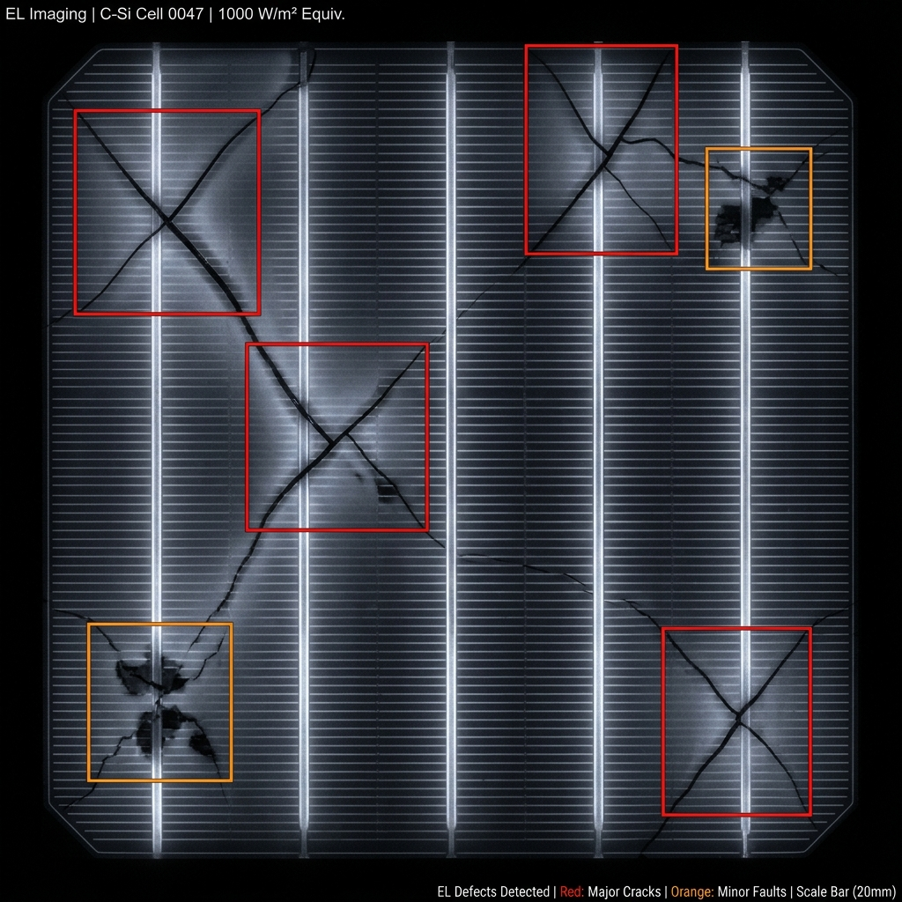

Why Solar Needs Intelligent Eyes
Solar energy has become one of the fastest-growing renewable energy sources worldwide. However, photovoltaic (PV) modules gradually lose efficiency due to cracks, hotspots, corrosion, dust accumulation, discoloration, and weather-related wear.
Manual inspection is expensive and time-consuming. SolarGuard AI employs Deep Convolutional Neural Networks (DCNNs) trained using the IEEE Dataport PVEL-AD dataset to automatically identify degradation-related anomalies from electroluminescence images, enabling timely maintenance and improved energy generation.
Automated EL image analysis replacing costly manual inspection cycles entirely.

The Challenges We Solve
Traditional inspection methods rely on manual inspection or thermal imaging, requiring significant time, cost, and expertise.
Early-Stage Detection
Difficulty in identifying micro-defects before they escalate into severe efficiency losses.
High Maintenance Cost
Skilled personnel and equipment required for recurring physical inspections drive costs up.
Human Inspection Errors
Subjectivity and fatigue introduce inconsistencies in manual fault diagnosis reports.
Delayed Diagnosis
Weeks or months may pass between inspections, allowing faults to compound undetected.
Reduced Energy Output
Undetected degradation silently reduces power generation and system ROI over time.
Lack of Automation
Absence of intelligent, scalable monitoring solutions for large-scale solar installations.
Research Questions & Gaps
Research Questions
- How accurately can CNNs detect degradation using the PVEL-AD dataset?
- Which CNN architecture provides the best trade-off between accuracy and efficiency?
- Can degradation be detected before noticeable power loss occurs?
- How well does the model generalize under different environmental conditions?
Research Gaps
- Existing methods depend entirely on manual inspection
- Limited benchmark datasets for PV defect classification
- Reduced performance under varying environmental conditions
- Few lightweight real-time CNN solutions available
- Limited localization of microscopic defects in EL images
IEEE Dataport PVEL-AD
The PV EL Anomaly Detection dataset — a comprehensive benchmark for photovoltaic defect research.
Dataset Overview
Contains electroluminescence images of photovoltaic cells including healthy cells and ten defect categories. Expert-annotated bounding boxes make it ideal for classification, object detection, and defect localization tasks.
Dataset Challenges Addressed
Background Heterogeneity
EL images contain varying textures and noise, requiring robust preprocessing and feature extraction pipelines.
Micro-defect Localization
Expert bounding boxes enable precise localization of cracks and sub-millimeter damaged regions at cell level.
Class Imbalance
Data augmentation and balanced sampling strategies improve performance on rare defect categories significantly.
What Makes SolarGuard Different
AI-based Defect Localization
Accurately pinpoints degradation regions with bounding boxes instead of only classifying panels at module level.
Early Degradation Detection
Identifies cracks, hotspots, and inactive cells before significant efficiency loss occurs — protecting revenue.
Industrial Scalability
Supports drone-based and automated inspection pipelines for utility-scale solar farm deployment.
Predictive Maintenance
Reduces maintenance costs and improves photovoltaic system reliability through proactive AI-driven alerts.
Competitive Landscape
How SolarGuard AI compares to existing solutions in the market.
| Product | Key Features | Limitations |
|---|---|---|
| AI asset monitoring, predictive maintenance | Not designed for PV image-based degradation detection | |
| Drone inspection with thermal imaging | Requires expensive drone hardware investment | |
| Drone analytics and solar inspection | Mainly suitable for utility-scale solar farms only | |
| Panel-level monitoring and diagnostics | Focuses on electrical monitoring, not CNN image analysis | |
|
SolarGuard AI ✦
|
DCNN-based EL image analysis, defect localization, early detection, scalable | No critical limitations — designed specifically for this problem |
United Nations Sustainable Development Goals
SolarGuard AI directly contributes to three of the 17 UN Sustainable Development Goals.
Affordable and Clean Energy
Early degradation detection maintains peak renewable energy generation output, improving energy affordability and clean energy access globally.
High ImpactIndustry, Innovation & Infrastructure
AI modernizes industrial solar infrastructure through intelligent predictive maintenance — fostering sustainable industrial innovation.
High ImpactResponsible Consumption & Production
Precise defect localization enables targeted repair of damaged cells rather than full panel replacement, reducing electronic waste significantly.
High ImpactBuilding a Sustainable Energy Future
SolarGuard AI demonstrates that deep learning, applied to publicly available electroluminescence imagery from the IEEE Dataport PVEL-AD dataset, can revolutionize solar panel maintenance. By automating defect detection and localization, we reduce inspection costs, extend panel lifespans, and optimize renewable energy output at scale.